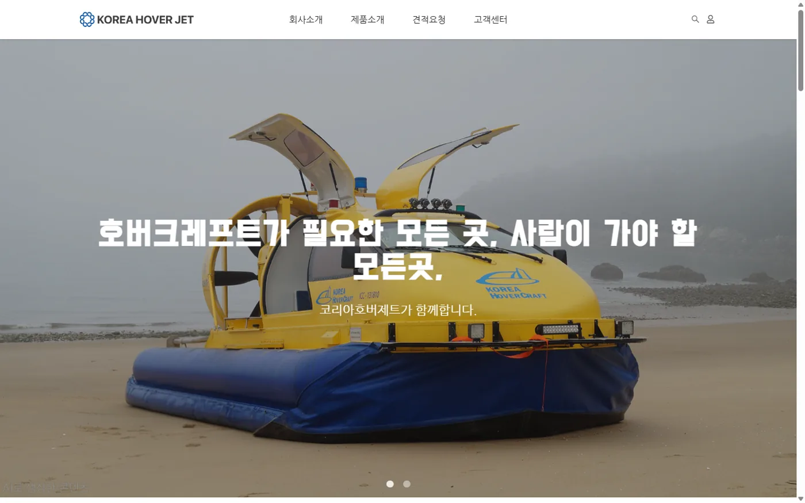
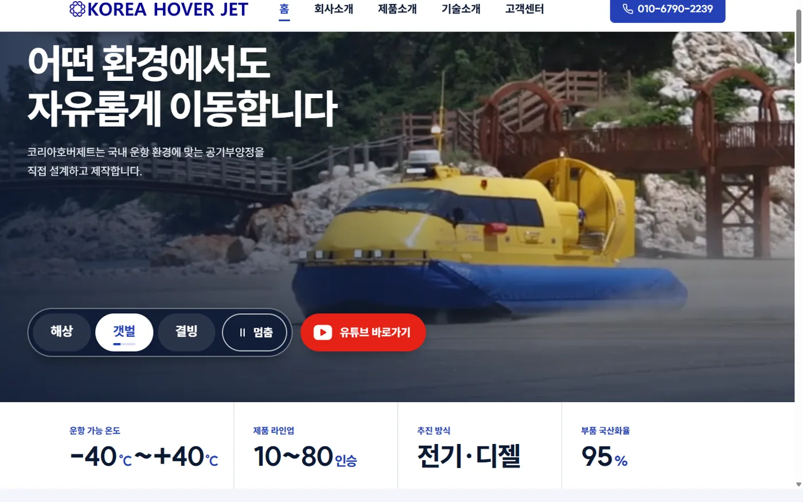
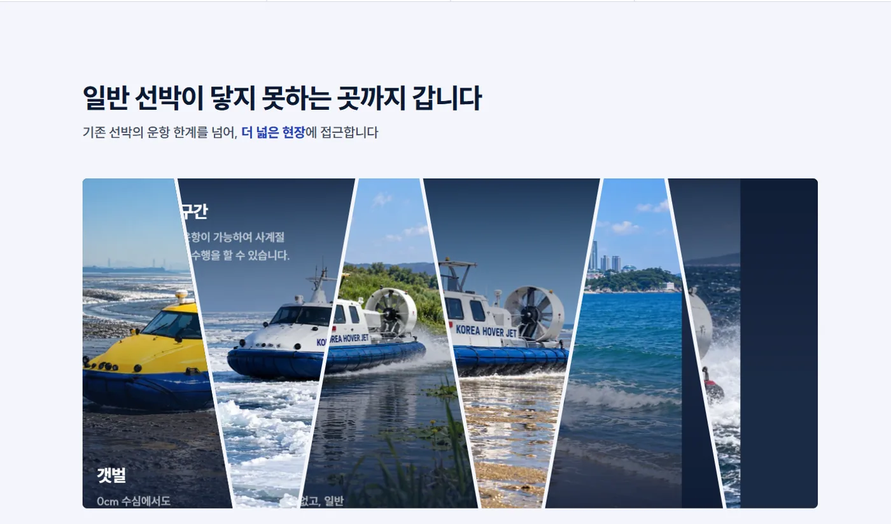
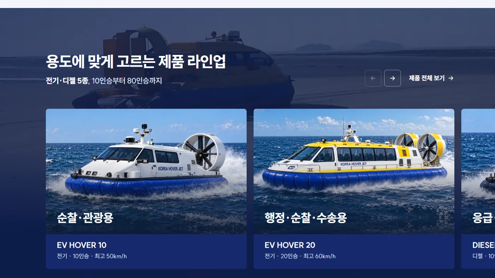
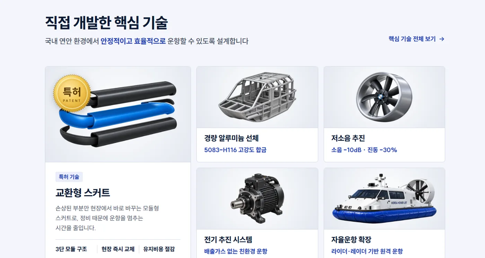
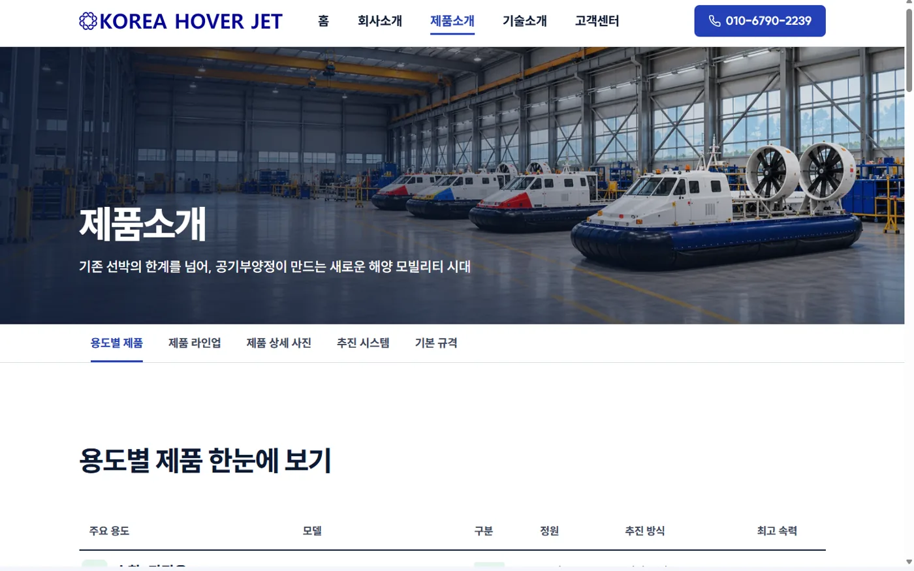
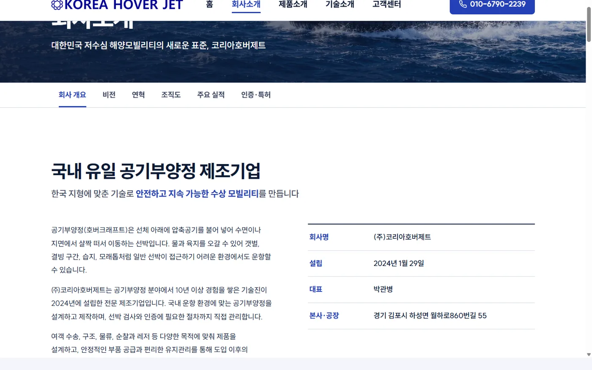
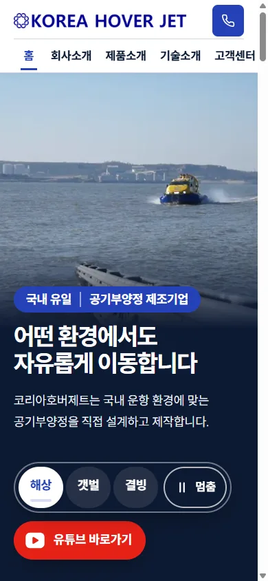

웹 리뉴얼 · 외주
코리아호버제트 홈페이지 리뉴얼
게시판 중심의 제조사 홈페이지를 방문자가 사용 환경, 제품, 기술, 실적을 확인하는 순서에 맞춰 재구성했습니다.
01기존 사이트의 문제
비슷한 실적 메뉴가 여러 게시판으로 나뉘어 있었고, 제품도 게시글 형태라 모델별 차이를 비교하기 어려웠습니다. 방문자의 질문을 「현장에서 사용할 수 있는가」, 「어떤 모델이 맞는가」, 「신뢰할 수 있는 회사인가」로 정리하고 메뉴와 화면 순서를 다시 설계했습니다.


02메뉴 구조 개편
| 메뉴 | 리뉴얼 전 | 리뉴얼 후 |
|---|---|---|
| 회사소개 | 회사개요 · 연혁 · 납품실적 · 주요실적 · 생산과정 · 회사업적 · 위치도 | 회사 개요 · 비전 · 연혁 · 조직도 · 주요 실적 · 인증·특허 |
| 제품소개 | 공기부양정 · 에어보트 · 제트보트 (게시판) | 용도별 제품 · 제품 라인업 · 상세 사진 · 추진 시스템 · 기본 규격 |
| 기술소개 | — | 새로 만듦 · 공기부양정이란 · 기존 선박의 한계 · 핵심 기술 · 활용 분야 |
| 고객센터 | 견적요청 · 공지사항 · Q&A (게시판 각각) | 공지사항 · 온라인 문의 · 자주 묻는 질문 |
① 실적 메뉴 세 개를 하나로 통합
- 문제
- 납품실적 · 주요실적 · 회사업적이 따로 있어, 방문자가 어디를 봐야 할지 알 수 없었습니다.
- 결정
- "주요 실적" 하나로 합치고 바로 옆에 인증·특허 메뉴를 두었습니다. 실적과 인증 모두 회사의 신뢰도를 판단할 때 보는 자료이기 때문입니다.
② 기술소개 메뉴 신설
- 문제
- 처음 보는 제품인데도 일반 선박 대신 공기부양정을 써야 하는 이유를 설명하는 곳이 없었습니다.
- 결정
- 원리, 기존 선박의 한계, 핵심 기술, 활용 분야 순서로 별도 페이지를 만들었습니다. 제품을 고르기 전에 필요한 설명은 제품 페이지와 나눴습니다.
03메인 화면 설계
메인 화면은 사용 환경, 제품 선택, 기술, 실적, 문의 순서로 구성했습니다. 방문자가 자신의 현장에서 사용할 수 있는지 먼저 확인한 뒤 제품과 기술을 살펴보고, 회사의 실적을 검토한 후 문의할 수 있도록 배치했습니다.
| 순서 | 섹션 | 답하는 질문 |
|---|---|---|
| 1 | 운항 환경 탭(해상 · 갯벌 · 결빙…) + 핵심 숫자 4개 (−40~+40℃ · 10~80인승 · 전기·디젤 · 부품 국산화율 95%) | 우리 현장에서 쓸 수 있나 |
| 2 | 일반 선박이 닿지 못하는 곳 — 갯벌 · 결빙 · 습지 · 모래톱 · 도서·연안 · 해상 고속 | 우리 현장에서 쓸 수 있나 |
| 3 | 용도별 제품 라인업 5종 — 순찰·관광부터 군·산업용까지 | 어떤 모델을 골라야 하나 |
| 4 | 직접 개발한 핵심 기술 — 교환형 스커트(특허) · 경량 알루미늄 선체 · 저소음 · 전기 추진 · 자율운항 | 어떻게 가능한가 |
| 5 | 운항 실적 · 방송 · 인증 · 해외 협약 | 이 회사를 믿을 수 있나 |
| 6 | 견적 문의 — 전화 · 온라인 문의 | 어떻게 문의하나 |



04제품 정보 재구성
③ 제품을 용도별로 먼저 분류
- 문제
- EV HOVER 10, DIESEL HOVER 20 같은 모델명만으로는 처음 보는 방문자가 차이를 파악하기 어려웠습니다.
- 결정
- 순찰·관광용, 행정·순찰·수송용, 응급·의료용 등 사용 목적을 먼저 보여 주고, 정원·추진 방식·최고 속력은 그 아래에 정리했습니다. 제품 페이지도 용도별 비교표로 시작하도록 구성했습니다.

05AI 이미지 제작
기존 제품 사진은 현장 촬영본이 많아 배경이 복잡하거나 해상도가 낮았습니다. 실물 사진을 기준으로 제품 형태를 유지하면서 메인 이미지, 제품 누끼, 공장 이미지, 고객센터 배너를 디자인 AI로 제작하거나 보정했습니다.


06설계와 구현을 연결한 방법
화면 설계의 의도를 유지하기 위해 AI 코딩 도구를 활용해 직접 구현했습니다. 화면별 요구사항과 검수 기준을 나누어 전달하고 결과를 설계안과 비교하며 수정했습니다. 이 방식으로 별도 개발자 없이 6개 페이지와 게시판을 제작했습니다.
07결과와 회고
회사가 보여 주고 싶은 정보보다 구매를 검토하는 사람이 확인하는 순서를 기준으로 사이트를 구성했습니다. 여러 게시판에 흩어져 있던 실적과 제품 정보는 각각 한 메뉴에서 비교할 수 있게 되었고, 사용 환경부터 문의까지 이어지는 탐색 순서도 명확해졌습니다.